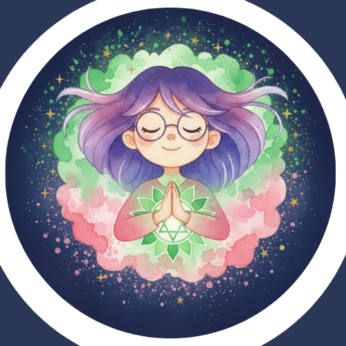

ABUT
はじめまして
オカルトかーちゃんです
その時のテーマに沿った存在からのメッセージを
チャネリングで受け取り
オラクルカードのヒントを交え
ペンデュラムで具体性を高めて言葉にします
わたしの想い
神秘的な伝説が残る青森・新郷村で生まれ
幼いころから日々の不思議やご先祖さまの気配を身近に感じて過ごしてきました
自分の人生が半分を過ぎた今ふり返ると、スピリチュアルなことは常に隣にあったなぁと感じています
深い理屈よりも、“神秘的なことっておもしろい”という気持ちに導かれ
オカルトに親しんできたことが原点となり
2024年に「オカルトかーちゃん」として発信を始めました
組織の中で働いていると
一人の力にはどうしても限界があると感じるときがあります
けれども、同じ思いを持つ人が増えていけば、できないと思っていたことが少しずつ動きだすんですよね
だからこそ「世の中を少しでも生きやすくしたい」と願う人が増えたら、未来はきっと良い方向へ変わっていく
その願いを持つ方に寄り添い、わたしができることで力を添えたいと考えていました
そんなときにチャネリングと出会い、「これなら人の役に立てる」と心から思いました
セッションを通じて、見えない世界のサインをあなたと一緒に受け取り
日常の迷いや不安を気づきへ変える
安心感の中で、あなたが自分らしく選択できるよう、そのお手伝いをすることが、わたしの役目です
未来を良くも悪くも決めつけることではなく、あなたが幸せに向かって立ち上がれること
そして、あなたの信じる未来にフォーカスして行動できるよう願っています
できること
- チャネリングで、その時のテーマに沿ったメッセージを受け取る
- オラクルカードで多角的な視点をプラス
- ペンデュラムで具体性を高め、実生活に活かせる言葉としてお伝えする
- セッション後に振り返りシートをお渡ししています
人となり
二児の母として日常を楽しみながら、
「かーちゃん目線のあたたかさ」と「神秘的な感性」の両方を大切にしています
忘れっぽいので乗っていった自転車を忘れて帰ってくるタイプです
普段はサラリーマンで、スピリチュアルやオカルトとは畑違いな仕事をしています